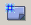
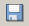

To create a new scenario, start the QualNet GUI and click the
New  button in the toolbar.
To rename the scenario, click the Save  button in the toolbar (see
Figure 3‑1). In the dialog that opens, navigate to the directory
QUALNET_HOME/scenarios/user (where
QUALNET_HOME is the directory where
QualNet is installed), and enter “MyWiFi” in the
File Name field. This will create a new folder,
QUALNET_HOME/scenarios/user/MyWiFi. All files associated with the new scenario will be stored in this folder. The name displayed on the scenario tab also changes to “MyWiFi”.
Copy the folder QUALNET_HOME/scenarios/demo/WiFiDemo/urban to
QUALNET_HOME/scenarios/user/MyWiFi/urban. This folder contains the file with details of the urban terrain for the scenario (dimensions of buildings, park, etc.). Also copy the icon files for routers and access points, router-color.png and AccessPoint.png.